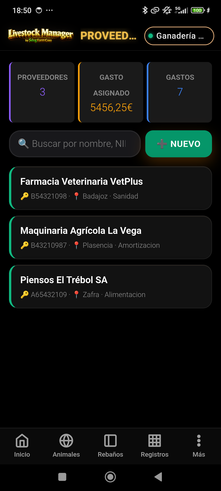
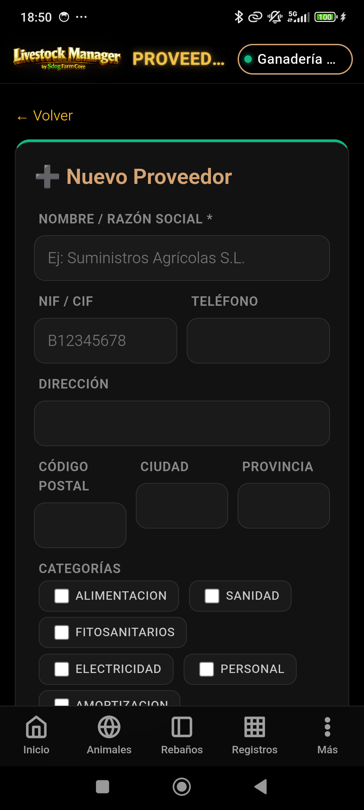
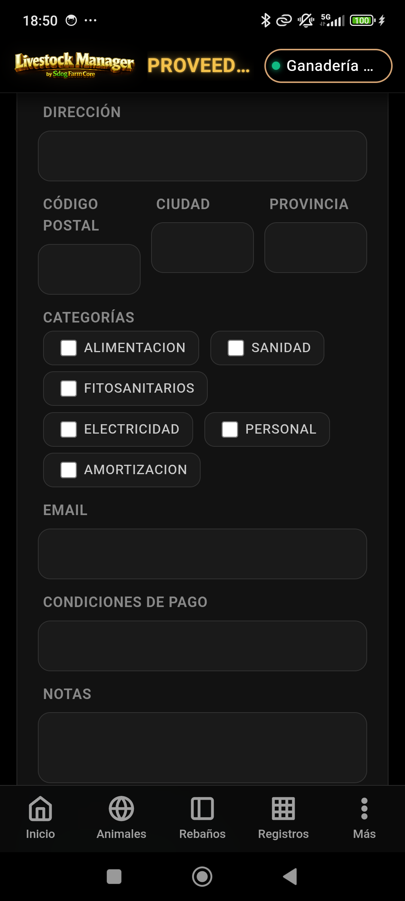
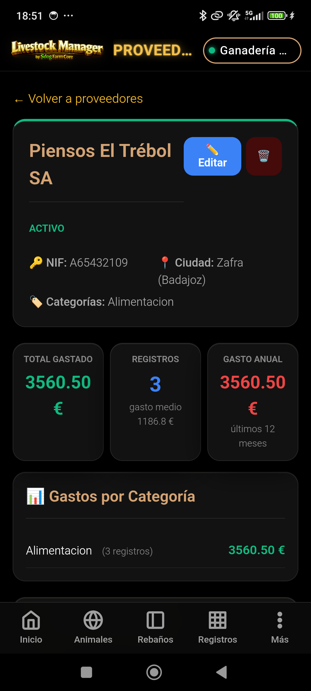
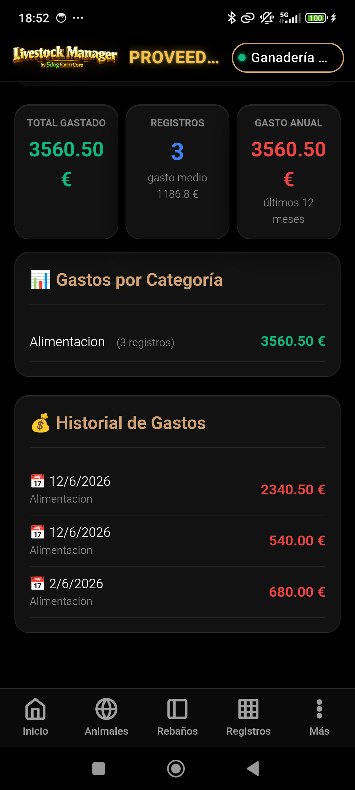
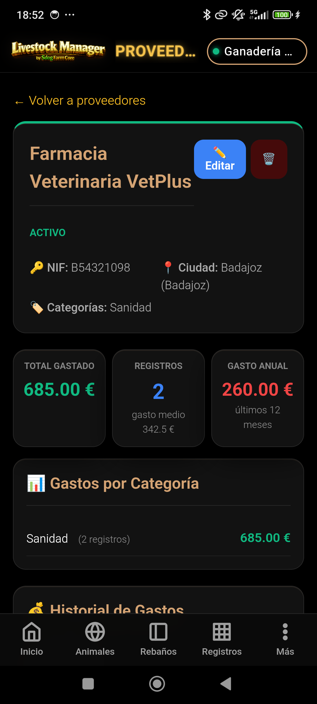
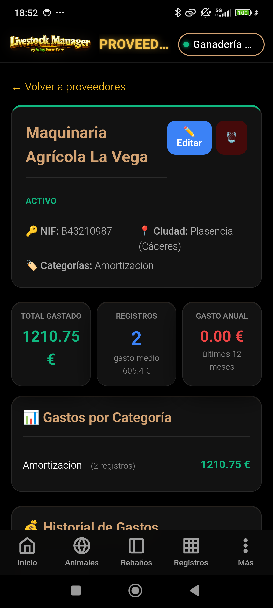

🏭 Proveedores
Trazabilidad de Costes — Guía completa paso a paso
MANUAL PRÁCTICO · Gestión de proveedores y gastos analíticos
Trazabilidad de Costes — Guía completa paso a paso
Este manual documenta el módulo de Proveedores de Livestock Manager. Un proveedor es la empresa o autónomo de quien se compran insumos, servicios o suministros para la explotación. Registrar los proveedores permite asociar cada gasto a su origen, obteniendo una trazabilidad completa de los costes.
Los proveedores se clasifican por categorías que se corresponden con las categorías contables de gastos (alimentación, sanidad, amortización…). Esto permite filtrar el proveedor adecuado al registrar un gasto y analizar el gasto por proveedor en los informes.
Accede al módulo de proveedores desde Más → Proveedores en la barra de navegación inferior.
Desde la pantalla principal puedes:
Se abre pulsando ➕ Nuevo o ✏️ Editar desde la ficha del proveedor.
| Campo | Obligatorio | Descripción |
|---|---|---|
| Nombre / Razón Social | Sí | Nombre completo de la empresa o autónomo |
| NIF/CIF | No | Identificación fiscal. Si se introduce, debe ser único en el sistema. |
| Dirección | No | Dirección postal completa |
| Código Postal | No | CP de la localidad del proveedor |
| Ciudad | No | Localidad del proveedor |
| Provincia | No | Provincia del proveedor |
| Teléfono | No | Teléfono de contacto |
| No | Correo electrónico de contacto | |
| Categorías | No | Una o varias categorías de suministro (ver sección 3) |
| Condiciones de Pago | No | Ej: "30 días", "al contado", "60 días fin de mes" |
| Notas | No | Observaciones adicionales |
| Activo | No | Checkbox para activar/desactivar el proveedor (por defecto: activado) |
Las categorías de proveedor se corresponden con las categorías contables de gastos. Un proveedor puede tener una o varias categorías asignadas.
| Categoría | Valor interno | Icono | Tipo de suministro típico |
|---|---|---|---|
| Alimentación | Alimentacion | 🌾 | Piensos, forrajes, cereales, suplementos minerales |
| Sanidad | Sanidad | 💉 | Medicamentos, vacunas, material veterinario, honorarios veterinarios |
| Fitosanitarios | Fitosanitarios | 🌱 | Herbicidas, pesticidas, abonos, semillas tratadas |
| Electricidad | Electricidad | ⚡ | Comercializadoras de electricidad, gas, combustibles |
| Personal | Personal | 👷 | Agencias de trabajo temporal, asesorías laborales |
| Amortización | Amortizacion | 🚜 | Proveedores de maquinaria, instalaciones, vehículos, talleres |
Alimentacion (sin tilde), Sanidad,
Fitosanitarios, Electricidad, Personal,
Amortizacion (sin tilde).
Al registrar un gasto desde Registros → Gastos → ➕ Gasto, el wizard ofrece un campo opcional para seleccionar el proveedor asociado.
Pulsa sobre un proveedor en el listado para abrir su ficha detallada.
| Sección | Contenido |
|---|---|
| KPIs | Total de gastos (nº y €), gasto último año, gasto promedio por operación |
| Datos de contacto | NIF, dirección, teléfono, email, condiciones de pago |
| Categorías | Etiquetas de las categorías asignadas al proveedor |
| Historial de gastos | Lista de todos los gastos asociados, ordenados por fecha descendente |
| Desglose por categoría | Total gastado en cada categoría contable para este proveedor |
La demo CHAMORRO incluye 3 proveedores precargados, cada uno con una categoría distinta:
| Nombre | NIF/CIF | Categoría | Ciudad | Provincia |
|---|---|---|---|---|
| Piensos El Trébol SA | A65432109 | 🌾 Alimentacion | Zafra | Badajoz |
| Farmacia Veterinaria VetPlus | B54321098 | 💉 Sanidad | Badajoz | Badajoz |
| Maquinaria Agrícola La Vega | B43210987 | 🚜 Amortizacion | Plasencia | Cáceres |
En la demo, estos proveedores aparecen asociados a los siguientes gastos:
| Proveedor | Nº gastos | Total (€) | Categoría |
|---|---|---|---|
| Piensos El Trébol SA | 3 | 3.560,50 | Alimentación |
| Farmacia Veterinaria VetPlus | 2 | 685,00 | Sanidad |
| Maquinaria Agrícola La Vega | 2 | 1.210,75 | Amortización |
Flujo visual del módulo de proveedores con datos reales de gasto de la demo.






